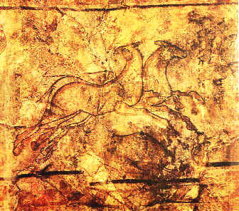

ايران به دنيا يک هنر مخصوص را عرضه کرده است که در نوع خودش بي مانند است. (Basil Gray)
تاريخ هنر نقاشي در ايران به زمان غارنشيني برميگردد. در غارهاي استان لرستان تصاوير نقاشي شده از حيوانات و تصاوير کشف شده است. نقاشيها بوسيله (W.Semner) بر روي ديواره هاي ساختمانها در ملاير و فارس که به 5000 سال پيش تعلق دارند کشف شده است.
نقاشي هاي کشف شده در مناطق تپه سيالک و لرستان بر روي ظروف سفالي، ثابت مي کند که هنرمندان اين مناطق با هنر نقاشي آشنايي داشته اند.
 |
همچنين نقاشيهايي از دوران اشکانيان، نقاشي هاي معدودي بر روي ديوار، که بيشتر آنها از قسمتهاي شمالي رودخانه فرات بدست آمده، کشف شده است. يکي از اين نقاشيها منظره يک شکار را نشان ميدهد. وضعيت سوارها و حيوانات و سبک بکار رفته در اين نقاشي ما را بياد منياتورهاي ايراني مي اندازد.
در نقاشيهاي دوران هخامنشي، نقاشي از روي چهره بر ساير نقاشي هاي ديگر تقدم داشت. تناسب و زيبايي رنگها از اين دوران، بسيار جالب توجه است. نقاشي ها بدون سايه و با همديگر هماهنگي دارند. در بعضي از موارد، سطوح سياه پر رنگ را محدود کرده اند.
ماني، (پيامبر و نقاش ايراني)، که در قرن سوم زندگي ميکرد، يک نقاش با تجربه و ماهر بود. نقاشي هاي او يکي از معجزاتش بود.
نقاشي (Torfan) که در صحراي گال استان ترکستان در چين بدست آمد، مربوط است بسال 840 تا 860 بعد از ميلاد. |
اين نقاشي هاي ديوارنما مناظر و تصاوير ايراني را نمايش ميدهند. همچنين تصاوير شاخه هاي درختي در اين نقاشي ها وجود دارند. باستاني ترين نقاشي هاي دوران اسلامي، که بسيار کمياب است، در نيمه نخست قرن سيزدهم به وجود آمده بودند. مينياتورهاي ايراني (طرح هاي خوب و کوچک) بعد از سقوط بغداد در سال 1285 ميلادي بوجود آمدند. از آغاز قرن چهاردهم کتابهاي خطي بوسيله نقاشي از صحنه هاي جنگ و شکار تزئين شدند.
|
چين از قرن هفتم به بعد به عنوان يک مرکز هنري، مهمترين انگيزه براي هنر نقاشي در ايران بود. از آن به بعد يک رابطه بين نقاشان بودائي چيني و نقاشان ايراني بوجود آمده است.
از لحاظ تاريخي، مهمترين تکامل در هنر ايراني، تقبل طرحهاي چيني بوده است که با رنگ آميزي که ادراک ويژه هنرمندان ايراني است مخلوط شده بود. زيبايي و مهارت خارق العاده نقاشان ايراني واقعاً خارج از توصيف است. در قرن اول اسلامي، هنرمندان ايراني زينت دادن به کتابها را شروع کردند.
کتابها با سرآغاز و حاشيه هاي زيبا رنگ آميزي و تزئين شده بود. اين طرحها و روشها از يک نسل به نسل ديگر با همان روش و اصلوب منتقل مي شد، که معروف است به "هنر روشن سازي". هنر روشن سازي و زيبا کردن کتابها در زمان سلجوقيان و مغول و تيموريان پيشرفت زيادي کرد. شهرت نقاشي هاي دوران اسلامي شهرت خود را از مدرسه بغداد داشت. |
مينياتورهاي مدرسه بغداد، کلاً سبک و روشهاي نقاشي هاي معمولي پيش از دوره اسلامي را گم کرده است. اين نقاشي هاي اوليه و بدعت کارانه فشار هنري لازم را ندارند. مينياتورهاي مدرسه بغداد اصلاً متناسب نيستند. تصاوير نژاد سامي را نشان ميدهد؛ و رنگ روشن استفاده شده در آن نقاشي را. هنرمندان مدرسه بغداد پس از سالها رکود مشتاق بودند که آيين تازه اي را بوجود آورده و ابتکار کنند. نگاه هاي مخصوص اين مدرسه، در طرح حيوانات و با تصاوير شرح دادن داستانها است.
اگر چه مدرسه بغداد، هنر پيش از دوره اسلامي را تا حدي در نظر گرفته بود، که بسيار سطحي و بدوي بود، در همان دوره هنر مينياتور ايراني در تمام قلمرو اسلامي از آسياي دور تا آفريقا و اروپا پخش شده بود.
|
از ميان کتابهاي مصور به سبک بغداد ميتوان به کتاب "کليله و دمنه" اشاره کرد. تصاوير نامتناسب و بزرگتر از حد معمول رنگ شده است؛ و فقط رنگهاي معدودي در اين نقاشيها بکار رفته است.
بيشتر کتابهاي خطي قرن سيزدهم، افسانه ها و داستانها، با تصاويري از حيوانات و سبزيجات تزئين شده است. يکي از قديمي ترين کتابهاي کوچک طراحي شده ايراني بنام "مناف الحيوان" در سال 1299 ميلادي بوجود آمده است. اين کتاب مشخصات حيوانات را شرح ميدهد. در اين کتاب تاريخ طبيعي با افسانه در هم آميخته شده است.
موضوعات اين کتاب که تصاوير بسياري دارد، براي آشنايي با هنر نقاشي ايراني بسيار مهم است. رنگها روشن تر و از روش مدرسه بغداد که روشي قديمي بود جلوتر است.
پس از هجوم مغولان، يک مدرسه جديد در ايران به نظر ميرسيد. اين مدرسه تحت تأثير از هنر چيني و سبک مغول بود. اين نقاشي ها همه خشک و بي حرکت و خالص و يکسان، مانند سبک چيني است. |
بعد از حمله مغول به ايران، آنها تحت تأثير از هنر ايراني، نقاشان و هنرمندان را تشويق کردند. در ميان نقاشي هاي هنرمندان ايراني ميتوان سبک مغول هم مشاهده کرد، لطافت ها، ترکيبات آرايشي، و خطوط کوتاه خوب که ميتوان آنها را بشمار آورد. نقاشي هاي ايراني بصورت خطي و نه ابعادي مي باشد. هنرمندان در اين زمينه از خود يک خلاقيت و اصالت نشان داده اند.
هنرمندان مغول دادگاه سلطنتي نه فقط به تکنيک بلکه به موضوعات ايراني هم احترام گذاشتند. يک بخش از کارشان شرح دادن به آثار ادبي ايران مانند شاهنامه فردوسي بود. ميان موضوعات مختلف بيشترين علاقه آنها به تصويريسم (کتابهاي با تصاوير زياد) بود.
بر خلاف مدارس مغول و بغداد بيشترين کارها از مدرسه هرات بجا مانده است. مؤسس اين سبک نقاشي مدرسه هرات بود؛ که از نياکان تيموريان بودند و اين مدرسه را بخاطر محل تأسيس آن مدرسه هراتي ناميدند. |
|
متخصاص هنر نقاشي بر اين باورند، که نقاشي در ايران در دوران تيموري به اوج خود رسيده بود. در طول اين دوره استادان برجسته اي، همچون کمال الدين بهزاد، يک متد جديد را به نقاشي ايران عرضه کرد. در اين دوره (تيموريان) که از سال 1370 تا 1405 ميلادي به طول انجاميد؛ هنر نقاشي و کوچک سازي به بالاترين درجه کمال رسيده و بسياري از نقاشان مشهور عمرشان را بر سر اينکار گذاشته اند.
دو کتاب با ارزش از زمان بايسغر باقي مانده است؛ يکي کتاب "کليله و دمنه" و ديگري کتاب "شاهنامه". هنر کوچک ايراني در کتاب شاهنامه که در سال 1444 ميلادي در شيراز رنگ آميزي شده است، بخوبي مشخص است.
يکي از اين طرح ها نشان دادن يک منظره زيبا از يک دادگاه ايراني است که به سبک چيني رنگ آميزي شده است. کاشي هاي سفيد و آبي ايراني همراه با فرشهاي زيباي ايراني بصورت هندسي نقش شده است. در يکي از کتابهاي دستنويس "خمسه نظامي گنجوي"، سيزده مينياتور زيبا بوسيله "ميرک" کشيده شده است.
ساختگي بودن، حساسيت، و هنر نقاشي هاي بغداد از طرحهاي کشيده شده در کتاب "خمسه نظامي" کاملا مشهود است. اين قطعه با ارزش و فوق العاده هم اکنون در موزه بريتانيا قرار دارد. در اين قسمت از معماران و مهندسان مشغول ساختمان سازي هستند. اين نقاشي در سال 1494 ميلادي در هرات نقاشي شده است.
بهزاد، بهترين استاد سبک مدرسه هراتي، اين هنر را بسيار بسط داد. او سبک را اختراع کرد که قبل از او هرگز استفاده نشده بود.
يکي از برجسته ترين کارها کتاب شاهنامه فردوسي است که در کتابخانه گلستان ايران قرار دارد. اين شاهنامه در زمان سلطان بايسغر که يکي از شاهزادگان تيموري بود؛ به سبک مدرسه هراتي نقاشي شده است.
نقاشي هاي اين کتاب از نگاه رنگ آميزي و تناسب ترکيب دهنده تصاوير، در بالاترين حد زيبايي و استحکام قرار دارد.
در دوران صفويه مرکزيت هنر به شهر تبريز آمد. و برخي از هنرمندان هم در شهر قزوين ماندگار شدند. اما اصل سبک نقاشي صفويه در شهر اصفهان بوجود آمد.
مينياتورهاي ايراني، در دوره صفويه در شهر اصفهان، از سبک چيني جدا شده و قدم در راهي جديد نهاد. اين نقاشان بعدها به سبک طبيعي متمايل شدند. رضا عباسي مؤسس سبک "مدرسه نقاشي صفوي" بود. در نقاشي هاي دوران صفوي دگرگوني بسيار عالي در نقاشي ايراني رخ داد.
طرحهاي اين دوره يکي از بهترين و زيبا ترين و با سليقه ترين طرحهاي نقاشان ايراني است که نشان دهنده ذوق نقاشان ايراني است. مينياتورهاي خلق شده در اين دوره(مدرسه صفوي)، هيچکدام منحصراً با هدف مزين کردن کتابها کشيده نشده اند. سبک صفوي بسيار بهتر و ملايم تر از سبک مدرسه تيموريان (هراتي) و مخصوصاً سبک مغولي است.
|
در نقاشي نقاشان دوران صفوي آشکار شدن تخصص آنها در اين رشته بوضوح مشخص است. بهترين معرف از اين دوره نقاشي هاي هستند که در عمارت چهل ستون و عالي قاپو کشيده شده است.
در نقاشي هاي صفوي، موضوع اصلي شکوه و زيبايي اين دوره است. موضوعات نقاشي ها بيشتر حول محور بارگاه سلاطين، اشراف زادگان، کاخ هاي زيبا، مناظر زيبا و صحنه هايي از جنگ ها است.
در اين نقاشي ها انسانها با لباسهاي پرخرج نخ کشي، صورتهايي زيبا و مجسمه هاي ظريف رنگين به طور پر هيجان روشن به تصوير کشيده شده است. هنر نقاشي در طول دوران صفوي هم زياد و هم داراي کيفيت بهتر شد. در اين نقاشي ها آزادي بيشتر و مهارت و دقت بيشتر مشهود است.
هنرمندان بيشتر به اصول کلي پرداخته و از جزئيات غير ضروري اجتناب، که در شيوه هراتي و تبريزي بکار رفته بود، خودداري کردند. صافي خطوط، بيان زود احساسات و متراکم شدن موضوعات از مشخصات سبک نقاشي صفوي است. از آنجاييکه در اواخر دوران صفوي، از لحاظ جنبه فکري اختلافات جزئي در رنگ آميزي بوجود آورد، ميتوان به ظهور سبک اروپايي در اين نقاشي ها پي برد. |
نقاشي هاي دوران قاجاريه (قرن شانزدهم ميلادي) يک ترکيبي از سبک هنرهاي اروپايي کلاسيک و سبک و تکنيک مينياتورهاي دوران صوفي است. در اين دوران "محمد غفاري (کمال الملک)" سبک کلاسيک اروپايي را در ايران رواج داد. در اين دوران سبکي از نقاشي بوجود آمد که بنام "قهوه خانه" شناخته شد. اين نوع نقاشي يک پديده جديد در تاريخ هنر ايراني است. سبک "قهوه خانه" عامه پسند و مذهبي است. موضوعات اين سبک بيشتر تصاوير پيامبران و امامان، شعائر مذهبي، جنگها و نام آوران ملي بودند. "قهوه خانه ها" رفته رفته جاي خود را در بين مردم معمولي باز نمودند. در اين مکان داستان سرايان و نقالان داستانهاي حماسي و مذهبي را براي مردم بازگو ميکردند. هنرمندان همان داستانها را بر روي ديوارهاي اين "قهوه خانه ها" نقاشي کرده بودند. قبلا در گذشته که پادشاهان و اشراف زادگان نقاشان را پشتيباني ميکردند؛ اما اينبار هنرمندان به درخواست مردم عادي آن مناظر را بر روي ديوارها ميکشيدند و به اين کار علاقمند بودند.
در بيشتر اين قهوه خانه ها اين مناظر که بيشتر به درخواست عمومي بود رنگ آميزي شده بود. زيباترين مثالها در موزه اصلي تهران و همينطور در بعضي از موزه هاي خصوصي داخل و خارج از کشور نگهداري ميشود. نقاشي هاي ايراني، يک نوع ملاحت را که بي شباهت به هر چيز ديگر است به تماشاگر عرضه ميکند. آنها يک ارتباط بيکران با داستانهاي حماسي نگه داشته اند. نقاشي ايراني، بعنوان يکي از بزرگترين سبکهاي نقاشي در آسيا مطرح است. آسمان هاي روشن (آبي)، زيبايي شگفت انگيز شکوفه ها و در ميان آنها انسانهايي که دوست ميدارند و انسانهايي که تنفر دارند، خوشگذران و افسرده، به موضوعات مختلف نقاشان ايراني شکل ميدهند.
بازگشت
|